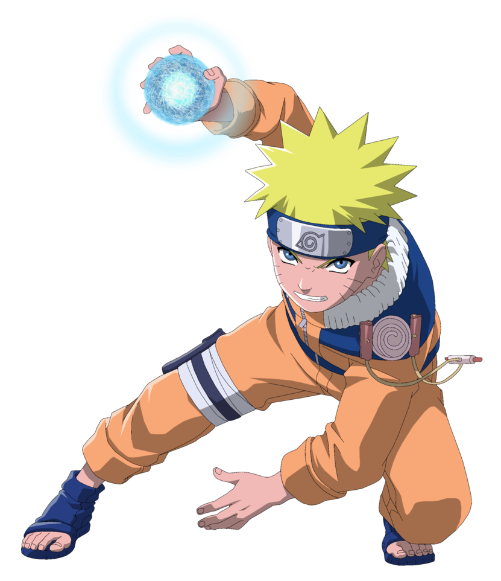

About Naruto
Naruto
Naruto(Japanese: うずまき ナルト) is a japanese manga series written and illustrated by
Masashi Kishimoto.It tells the story of Naruto Uzumaki,
a young ninja who seeks recognition from his peers and dreams of becoming Hokage, the leader of his village.
The story is told inn two parts - the first set in Naruto's preteen years, and the second in his his teens. th series is based on two one-shot manga by Kishimoto:Karakuri (1995), which earned Kishimoto
an nourable mention in Shueisha'smonthly hop step Award the folllowing year, and Naruto(1997).

Naruto Uzumaki
うずまき ナルト
Genre
Adventure, Fantasy, Comedy, Martial Arts
Manga
Demographic; shonen
Original run; September 21, 1999-
November 10, 2014
Naruto Uzumaki (Japanese: うずまき ナルト, Hepburn: Uzumaki Naruto) (/ˈnɑːrətoʊ/) is the titular protagonist of the manga Naruto, created by Masashi Kishimoto. As the series progresses, he is a young ninja from the fictional village of Konohagakure (Hidden Leaf Village). The villagers ridicule and ostracize Naruto on account of the Nine-Tailed Demon Fox—a malevolent creature that attacked Konohagakure—that was sealed away in Naruto's body. Despite this, he aspires to become his village's leader, the Hokage, in order to receive their approval. His carefree, optimistic, and boisterous personality enables him to befriend other Konohagakure ninja, as well as a ninja from other villages. Naruto appears in the series' films and in other media related to the franchise, including video games and original video animations (OVA), as well as the sequel Boruto:
Naruto Next Generations by Ukyō Kodachi, where he is the Hokage, and his son, Boruto Uzumaki, is the protagonist.
When creating Naruto for the initial part of the series, Kishimoto kept the character "simple and stupid", while giving him many attributes of an ideal hero. Kishimoto gave Naruto a dark side by adding tragedy to the character's past. He has revised Naruto's image many times, providing the character with different clothes intended to appeal to Western audiences and to make him easier to illustrate. Kishimoto changed his design for Part II of the storyline, which starts two-and-a-half years after Part I. Naruto is voiced by Junko Takeuchi in the original animated series and Maile Flanagan in the English adaptations.
Merchandise based on Naruto includes figurines and keychains. Naruto's character development has been praised by anime and manga publications and has drawn scholarly attention. Although some initially saw him as a typical manga and anime protagonist comparable to those in other shōnen manga, others have praised his personality and character development as he avoids stereotypes typically seen in similar media. The character has also been the subject of researches in literature, making him stand out in fiction based on his traits and growth.